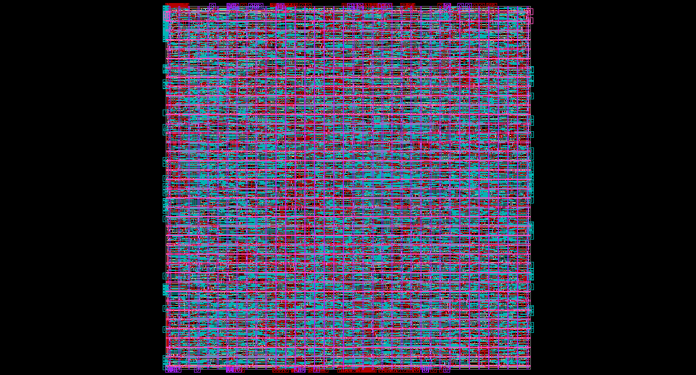

RTL & Physical Design
Physical Design Space Exploration – ISCAS-89 s38584
NC State · Physical Design
Design CompilerICC2GF180MCUPythonMakefileTcl
Problem
Find the cheapest configuration of a ~1,250-flop benchmark that still closes timing with zero DRCs.
What I did
- Took s38584 through synthesis with a single-chain scan setup, floorplan and PG mesh, placement, CTS, routing and route optimization on a GF180MCU 7-track library.
- Automated the flow with Makefiles and Python, running parallel sweeps over clock period, core utilization, max routing layer, clock transition and hold uncertainty.
- Extended the Python report parser to collect 45 metrics per run and added custom STA, critical-path and ADL pass/fail checks.
- Analyzed the failing runs to locate the routability and hold-timing limits (low utilization, Metal2-only routing).
Result
Final configuration (5 ns clock, 0.8 utilization, Metal3) closed timing with 0 DRCs and positive WHS at a 4.02 ns critical path and ~94% utilization; the area × delay × layer metric fell from 17.7M to 3.1M (~5.7×).
Layout
